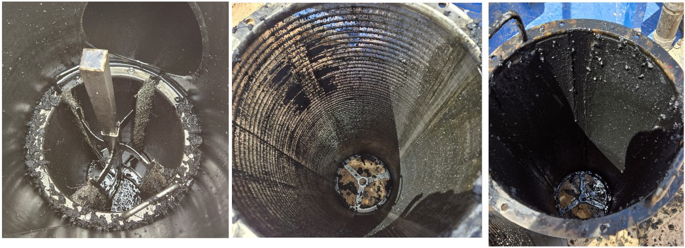

Other options bring consumables, weather-exposed parts, and a hand on location every time they blind off. Ours doesn't. Here's the difference.
Each side cleans independently — but it would not matter if both cleaned at once. The unit does not backwash, so it keeps flowing while it cleans, and what comes out the other side is still clean. Cleaning is not an interruption. It is what the machine does while it runs.
Automated dP-triggered control with a 7" HMI lets your operators make adjustments on the fly — no need to be on location. Data logging and remote access come standard.
Heavy-duty baskets, wire brushes, and ASME U-coded SS316 — internally lined for H₂S, CO₂, chlorides, and sour service. No flimsy parts to weather or break.
As proven through every trial, you can count on IP Filtration for questions, training, and service calls. Spare parts are stocked in Texas for fast turnaround.
Further down the process — on the back end of the SWD — most facilities are running bag filters or manual strainers. Bag filters blind off and need constant changeouts. Manual strainers mean a hand on location and a shutdown to clean. Both carry hidden, recurring cost. Taking the solids out at the inlet takes that cost off the table.
Dirty water enters and passes through a 50–500µm wedge-wire basket sized to your solids profile.
At a set differential pressure (0–160 psi), rotating SS316 brushes scrape the basket clean — no backwash water lost.
Debris drops to the sump and the SS316 purge valve flushes it to a bin or pit while clean fluid keeps flowing.

A 60-day free trial is the lowest-risk way to prove it out on your site.
Start your trial →